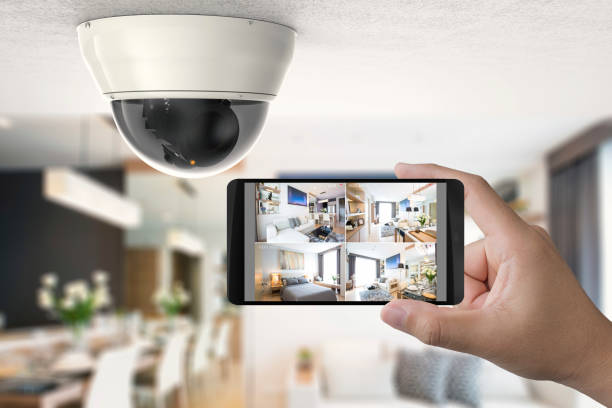
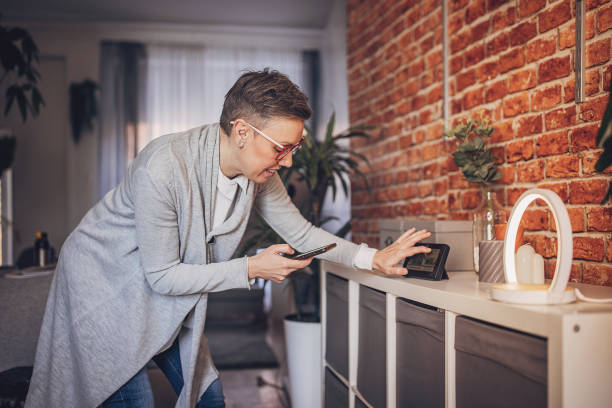
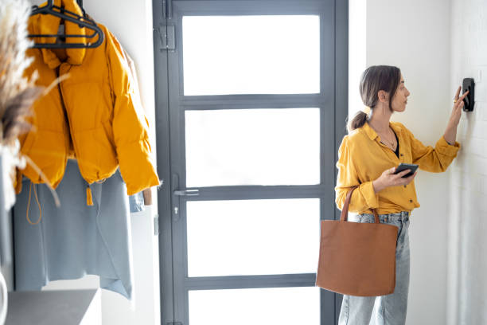

Jasper Tennessee
info@saferchoicehomesecurity.pro
Jasper Tennessee
info@saferchoicehomesecurity.pro

Trust our home security systems in Jasper Tennessee to safeguard your property. Experience the latest in security technology with reliable monitoring, instant alerts, and dedicated customer support to keep you secure.
Click Here To Call Us (877) 848-1711At Safer Choice Home Security, we recognize that protecting your home in Jasper Tennessee is essential for your peace of mind. That's why we provide top-of-the-line home security systems designed to offer comprehensive protection and unmatched reliability. Our advanced systems are tailored to meet the specific needs of Jasper Tennessee residents, ensuring that your property remains secure at all times.
Our cutting-edge technology includes 24/7 monitoring, smart home integration, and high-definition video surveillance. With our intuitive mobile app, you can easily monitor your home, receive real-time alerts, and control your security system from anywhere. Whether you're at home or on the go, you can trust our solutions to keep you connected and protected.
In addition to our state-of-the-art equipment, Safer Choice Home Security prides itself on exceptional customer service. Our team of security professionals is dedicated to providing personalized solutions and ongoing support to ensure your system operates flawlessly. We are committed to enhancing the safety of your home with reliable, innovative, and user-friendly security solutions tailored specifically for Jasper Tennessee . Choose Safer Choice Home Security for unparalleled protection and peace of mind.
Residential & commercial Home security systems
Quality services at affordable prices
Immediate 24/ 7 emergency services


Installing a home security system is a crucial step in safeguarding your property, and Safer Choice Home Security is here to make the process smooth and straightforward across all cities in Jasper Tennessee .
The first step in installing a home security system is to assess your security needs. Begin by evaluating the layout of your home, identifying vulnerable areas, and determining which types of sensors and cameras will best protect your space. Safer Choice Home Security offers expert consultations to help you design a system that fits your specific needs and budget.
Next, choose between a DIY installation or professional setup. While DIY options can be cost-effective, professional installation ensures that every component is correctly placed and integrated. Safer Choice Home Security provides expert installation services, ensuring that your system is set up efficiently and effectively. Our technicians will handle everything from mounting cameras to configuring sensors and connecting your system to your smartphone for remote monitoring.
After installation, it's essential to test your system to confirm that all components are working correctly. Safer Choice Home Security will guide you through this process, helping you test alarms, sensors, and cameras to ensure optimal performance.
Finally, regular maintenance and updates are key to keeping your system in top shape. We offer ongoing support and service to ensure your security system continues to protect your home effectively.
For a seamless home security installation experience in Jasper Tennessee trust Safer Choice Home Security. Contact us today to get started and secure your home with confidence.
Residential & commercial Home security systems
Quality services at affordable prices
Immediate 24/ 7 emergency services
Understanding the local landscape is key to effective home security. As one of the premier local home security providers we offer tailored solutions that take into account the unique safety challenges of the community. Our personalized services, ranging from consultations to installations and ongoing support, reflect our commitment to enhancing the safety of our neighbors. With our local expertise and deep understanding of your environment, we are dedicated to providing the highest quality security solutions that meet your every need. Choose us for personalized service from your local experts who care about the community's safety.

Protecting your home should be simple and affordable. Our home security packages offer cohesive solutions that combine various security devices and monitoring options at a price that fits your budget. Each package is customizable, allowing homeowners to select features that align with their specific security needs. Our knowledgeable sales team will help guide you to the appropriate package, illustrating how each component works together for maximum protection. We are your one-stop-shop for comprehensive home security, ensuring safety and peace of mind.

Burglary is an unfortunate reality for many homeowners, which is why investing in a burglar alarm is essential. Our burglar alarm installation service in Jasper Tennessee ensures you have a reliable and effective alarm system in place to deter intruders. Our alarms feature cutting-edge technology designed to provide alerts at the first sign of a breach. Our expert installation team will work with you to choose the optimal alarm system that fits your home, and we offer ongoing monitoring for continuous protection. Choose us for comprehensive service and an unwavering commitment to keeping your home safe from burglary.

Living in an apartment doesn’t mean you have to compromise on security. We specialize in providing tailored security solutions for apartments in Jasper Tennessee ensuring residents feel safe in their living spaces. Our security systems are designed to fit the specific layout and unique challenges of apartment living. Whether you need a simple alarm or a more sophisticated monitor system, we have options that fit your space and budget. Trust us to equip your apartment with the security it deserves, giving you peace of mind no matter where you live.

Transform your existing security setup into a more robust defense system with our home security upgrades in Jasper Tennessee . Whether your needs have evolved, or advancements in technology have emerged, our professional team is here to enhance your home’s protection. We conduct thorough assessments to identify vulnerabilities and recommend the best upgrades, from integrated surveillance to smart home enhancements. With us, you receive expert recommendations and professional installations, ensuring a seamless upgrade process that rejuvenates your home security experience. Trust us to help you maintain safety standards as technology advances.
We live in a connected world where being informed about your home’s safety is crucial, even when you're not there. Our remote home monitoring systems allow you to monitor your home from anywhere in the world. With real-time video feeds, alerts, and control of your security system, our solutions offer peace of mind while you're at work, on vacation, or simply running errands. We employ robust technology that ensures you have seamless access to your home's security landscape with just a few taps on your smartphone. Choose us for innovative remote monitoring solutions that keep you connected to your home.

For renters, home security can often feel like a challenge, but it's essential to prioritize your safety. Our home security systems for renters in Jasper Tennessee are specifically designed with the needs of renters in mind. We offer flexible, non-invasive installation options, ensuring that you can secure your living space without violating your lease agreements. Our affordable solutions include wireless systems and DIY setups that empower you to take control of your home security. We understand the concerns of renters and are committed to providing effective and discreet solutions. Trust us to help you create a safe space you can call home.

24/7 home security monitoring is a vital aspect of any comprehensive security system. Our round-the-clock monitoring services in Jasper Tennessee provide an extra layer of protection to ensure your home is continuously watched over, even when you're not there. Our skilled monitoring team is trained to respond quickly to alerts and emergencies, communicating with local law enforcement when necessary. With our monitoring solutions, you can rest easy knowing that your home is secure at all hours. We’re dedicated to offering the best service in the industry to our clients, providing you with confidence in your home security system.
Years Experience
Expert Technicians
Satisfied Clients
Compleate Projects
At Safer Choice Home Security, we understand that your home is your sanctuary, and protecting it is our top priority. With years of experience serving Jasper Tennessee we offer reliable, state-of-the-art home security systems designed to keep your family safe. Our tailored solutions ensure you get the right protection for your unique needs, whether you live in a quiet suburb or a bustling city center. We’re not just another security company; we’re your partners in safeguarding what matters most.
Our expert team in Jasper Tennessee is dedicated to providing exceptional service from consultation to installation. We use advanced technologies, including smart home integration, real-time monitoring, and wireless security systems that are easy to manage from your smartphone. With Safer Choice Home Security, you’re always connected, giving you peace of mind wherever you are. Our systems are designed to detect intrusions, alert you instantly, and help prevent break-ins before they happen.
What sets us apart in Jasper Tennessee is our commitment to quality and customer satisfaction. Our 24/7 support ensures you’re never alone, with quick response times and professional assistance whenever you need it. Plus, our transparent pricing means no hidden fees—just honest, straightforward service you can trust.
Choose Safer Choice Home Security for unmatched protection, local expertise, and a commitment to keeping your home secure. Experience the difference with the leading home security provider in Jasper Tennessee . Your safety is our mission.
In today’s fast-paced world, ensuring the safety of your home is more crucial than ever. As a homeowner, finding reliable home security systems near Jasper Tennessee can be overwhelming. Our team specializes in bringing you cutting-edge security solutions tailored to meet your specific needs. We understand that proximity matters, which is why we offer local expertise combined with a variety of customizable home security systems. Our commitment to excellence ensures that your home is protected with state-of-the-art technology, including smart home features and easy-to-use installations. With our extensive experience in the industry and a focus on customer satisfaction, we are the best choice for securing your loved ones and belongings.
Embrace the convenience of modern technology with our wireless home security systems . Gone are the days of cumbersome wires and complicated setups. Our wireless systems offer flexibility and ease of installation while providing robust security features. These systems include motion detectors, door/window sensors, and security cameras that communicate seamlessly with your mobile devices. With our expertise in wireless technology, we ensure that your security system is not only effective but also scalable, allowing for future enhancements as your security needs evolve. Choose us for our commitment to innovation, affordability, and reliable 24/7 monitoring services that give you peace of mind while safeguarding your home.
When it comes to protecting your home, selecting the best home security company can make all the difference. Our reputation as one of the top home security companies is built on our dedication to customer service, cutting-edge technology, and comprehensive security solutions tailored to your needs. We offer a diverse range of services, from alarm systems to video surveillance, all backed by a team of trained professionals committed to providing support and maintenance. Our systems are designed to integrate smoothly with your lifestyle, ensuring that you receive alerts and have control over your security at all times. Trust us to provide quality, reliability, and peace of mind with our expertly designed security packages.
Home security is a necessity, yet it does not need to break the bank. We specialize in affordable home security systems that do not compromise on quality. we understand the local economic landscape and offer flexible financing options tailored to fit your budget without sacrificing the safety of your home. Our systems include cutting-edge technology and reliable monitoring, ensuring you receive the best value for your investment. From basic alarm systems to advanced smart home features, we cater to every financial need, ensuring universal access to top-notch security solutions. Choose us for affordable options that combine quality, reliability, and peace of mind.
Discover the future of home safety with our smart home security systems in Jasper Tennessee . Integrating the latest in Internet of Things (IoT) technology, our smart security solutions provide you with unparalleled control and visibility of your home environment. Imagine being able to remotely monitor your home, lock your doors, or receive real-time alerts—all from your smartphone. Our expertise in smart home technology ensures that your system is not only efficient but also seamlessly integrates with existing smart devices. With us, you gain access to innovative security features, user-friendly interfaces, and commitment to keeping your home protected 24/7, making us your go-to choice for smart security systems.
A reliable home alarm system is your first line of defense against intruders and emergencies. Our home alarm systems utilize advanced technologies designed to deter break-ins and protect your family. With options for wired and wireless installations, our alarms feature loud sirens, smart notifications to your phone, and expert monitoring. Our team is dedicated to ensuring that your alarm system meets your specific needs, providing professional installation and ongoing support. We understand the importance of your home’s security, which is why we employ only the best practices and technology. Trust us to deliver an alarm system that not only alerts you but also keeps you connected to your home’s security at all times.
The visible presence of security cameras can deter criminal activity and provide crucial evidence should an incident occur. our security camera installation services are designed to offer you comprehensive surveillance of your property. We provide a wide range of camera types, including indoor, outdoor, and PTZ (pan-tilt-zoom) cameras, ensuring every blind spot is covered. Our experienced technicians will strategically place cameras for maximum effectiveness, while also configuring your system for easy access via your smartphone. With our expertise, you'll have peace of mind knowing that your property is protected 24/7.
Monitoring your home is essential to effective security. Our home security monitoring services operate 24/7, providing you with peace of mind around the clock. Our dedicated monitoring team is trained to expedite emergency responses and alerts, ensuring that any security breach is quickly addressed. With state-of-the-art technology, we integrate all security features – alarms, cameras, and detectors – into a singular monitoring system designed for fast, reliable response. Choose us for unparalleled vigilance that allows you to focus on what matters most.
Securing your home should be straightforward and effective, and our residential security systems are designed precisely with that goal. We offer a range of options tailored to meet the unique challenges of residential properties. Our systems include intrusion detection, video surveillance, and fire alarms, all monitored 24/7. Our experienced team ensures a hassle-free installation process and provides thorough follow-up support, making us the go-to choice for residents in Jasper Tennessee seeking a comprehensive security solution. We pride ourselves in delivering peace of mind, knowing your home is secure against any threats.
The effectiveness of a home security system depends heavily on its installation quality. Residents of Jasper Tennessee can count on our expert team for quick, efficient, and professional home security systems installation. We take pride in our meticulous approach to installation, ensuring every sensor, camera, and alarm is set perfectly to optimize your home's protection. Our certified technicians possess the know-how to handle any challenges during installation, allowing for a seamless setup that empowers you immediately. Choose us for an installation that prioritizes security and convenience.
For those who prefer a hands-on approach, our DIY home security systems offer an ideal solution. Easy to install and customizable, our systems empower you to take control of your home security. We provide all the necessary components and detailed guidance, allowing you to set up your system according to your specific preferences and needs. Our DIY approach comes with the option of professional support whenever you need it. This flexibility allows for a cost-effective solution without sacrificing security. Trust us to provide high-quality products that are easy to install yet powerful enough to secure your home effectively.
Combining home security systems with cameras enhances your overall security strategy, providing you with both alarms and visual monitoring capabilities. In Jasper Tennessee our systems are designed to integrate seamlessly with state-of-the-art cameras, allowing you to have a comprehensive view and control of your property. Our surveillance solutions include outdoor and indoor cameras that can be monitored remotely through your smartphone. The advantage of having surveillance cameras in combination with alarms cannot be overstated; it not only deters intruders but provides critical evidence in case of incidents. Trust our dedicated team to install a system that keeps your home secure around the clock.
Video surveillance systems are a critical component of modern security strategies. They offer peace of mind by allowing homeowners to monitor their properties in real-time. Our systems are equipped with high-resolution cameras, night vision capabilities, and motion detection features to ensure complete coverage. With video surveillance, you can track activities around your home and receive instant alerts on suspicious movements. Our skilled technicians will assist in designing your video system based on your property’s unique layout, ensuring no blind spots. With our reliable video surveillance solutions, you can enjoy the confidence of knowing your home is protected.
The convergence of home security and automation is revolutionizing the way we protect our homes. Our home automation security systems empower you to manage your security effortlessly. From remote locking and lighting controls to integrated camera feed access, we offer a complete suite of features that can be customized to enhance your security. Our installation experts ensure that your home automation system works harmoniously with your security needs. This integrated approach to home security ensures ease and effective management, allowing you to feel secure both at home and when you're away.
Motion sensor security systems are a vital component of modern home security strategies. Our state-of-the-art motion sensor systems detect unusual activity and trigger alerts, providing you with an immediate response to potential threats. Our sensors encompass various technologies, including infrared detection and thermal imaging, designed to minimize false alarms while maximizing coverage. Installation is straightforward, and our technicians will position each sensor for optimal effectiveness according to your home's unique layout. Trust us to deliver cutting-edge motion detection solutions that elevate your security measures.
Regular maintenance is crucial to ensuring the longevity and effectiveness of your security systems. Our security system maintenance services in Jasper Tennessee are designed to keep your systems in optimal condition. We recommend routine check-ups to troubleshoot any potential issues before they become significant problems. Our trained technicians will inspect your systems, conduct software updates, and make necessary repairs to provide continuous protection for your home. With our maintenance services, you’ll have peace of mind knowing that your security systems are always functioning perfectly.
Professional home security installation is crucial to achieving an effective and reliable security system. We specialize in providing professional installation services ensuring all aspects of your security system are set up correctly and tailored to your specific needs. Our technicians carry extensive training and expertise, which allows us to assess your property accurately and recommend the best solutions. When you trust us with your home security installation, you can be confident that your system will perform flawlessly, giving you the safety and peace of mind you deserve.
Experiencing a false alarm from your home security system can be both stressful and confusing. At Safer Choice Home Security, we understand the importance of addressing false alarms swiftly to maintain both security and peace of mind. Here’s what you should do if your home security system triggers a false alarm in Jasper Tennessee .
1. Stay Calm and Assess the Situation: The first step is to remain calm. Check your security system’s control panel or mobile app to identify the source of the alarm. Often, false alarms are triggered by minor issues such as low battery or a temporary sensor malfunction.
2. Verify the Alert: If possible, check the area where the alarm was triggered to ensure there is no actual security threat. This might involve checking doors, windows, and motion detectors to confirm that everything is secure.
3. Address Common Causes: Common causes of false alarms include faulty sensors, incorrect settings, or even environmental factors like pets triggering motion detectors. Safer Choice Home Security offers troubleshooting tips and can provide a professional inspection to resolve these issues.
4. Contact Your Security Provider: If the false alarm persists, contact Safer Choice Home Security in Jasper Tennessee . Our team can remotely troubleshoot the issue or schedule an on-site visit to address any technical problems with your system.
5. Review and Update Your System: Regular maintenance and system updates can help prevent future false alarms. We offer ongoing support and system upgrades to ensure your security system remains reliable and effective.
Handling false alarms efficiently is key to maintaining the effectiveness of your home security system. Contact Safer Choice Home Security today to ensure your system operates flawlessly and keeps your home secure.
Jasper is a town in and the county seat of Marion County, Tennessee, United States. The population was 3,612 at the 2020 census. The town was formed in 1820 from lands acquired from Betsy Pack (1770–1851), daughter of Cherokee Chief John Lowery. Jasper is part of the Chattanooga, TN–GA Metropolitan Statistical Area.
Yes, Safer Choice Home Security offers flexible security solutions for renters with easy-to-install systems that don’t require permanent modifications to your home.
If your security system is triggered Safer Choice Home Security’s monitoring team will immediately notify the authorities and help protect your home from intruders.
Yes, Safer Choice Home Security offers carbon monoxide detectors as part of your security system in Jasper Tennessee to help protect your family from dangerous gas leaks.
Safer Choice Home Security serves all areas with, providing security solutions for both residential and commercial properties throughout the region.
Yes, Safer Choice Home Security offers a free consultation to assess your home security needs and recommend the best solutions for you.
Yes, Safer Choice Home Security offers smart home security systems that can integrate with your smart devices, allowing remote access and control.
Yes, Safer Choice Home Security offers commercial security solutions including surveillance cameras, access control, and 24/7 monitoring to protect your business.
Safer Choice Home Security offers a variety of security cameras including indoor, outdoor, and doorbell cameras, all with high-definition video and night vision capabilities.
Yes, Safer Choice Home Security offers high-definition video surveillance systems including indoor and outdoor cameras with motion detection and cloud storage.
Yes, Safer Choice Home Security allows you to add additional cameras or sensors to your existing system, ensuring your home stays fully protected.
In many cases, Safer Choice Home Security can integrate your existing equipment with our monitoring services in Jasper Tennessee providing you with a seamless upgrade.
Safer Choice Home Security’s monitoring team responds to alerts within seconds, ensuring a quick response to any emergency or breach of security.
Safer Choice Home Security offers a variety of home security alarms including burglar alarms, fire alarms, carbon monoxide detectors, and medical alert systems.
Safer Choice Home Security is known for its reliable systems and exceptional customer service . Our equipment is top-quality, and our monitoring center provides fast, accurate response times.
Safer Choice Home Security offers backup battery solutions to ensure your system continues to function during power outages keeping your home secure at all times.
If you experience a false alarm Safer Choice Home Security will work with you to resolve the issue and reset your system. We also offer training on how to prevent false alarms.
Safer Choice Home Security offers a range of top-rated home security systems, including burglar alarms, smart cameras, and 24/7 monitoring services to ensure the safety of your property .
Yes, Safer Choice Home Security offers professional installation services in Jasper Tennessee ensuring that your security system is set up properly and efficiently.
Yes, Safer Choice Home Security offers discounts when you bundle multiple services, such as video surveillance, alarm monitoring, and smart home devices in Jasper Tennessee .
Safer Choice Home Security makes it easy to upgrade your system in Jasper Tennessee . We can add new cameras, sensors, or a more advanced monitoring package to meet your evolving security needs.
Safer Choice Home Security offers customized security solutions based on your home’s size, location, and security needs in Jasper Tennessee . We provide a free consultation to help you decide the best system for your home.
Safer Choice Home Security offers both contract and no-contract options for monitoring services so you can choose the plan that works best for you.
Yes, with Safer Choice Home Security’s mobile app, you can monitor your home security system in Jasper Tennessee from your smartphone or tablet, no matter where you are.
24/7 monitoring by Safer Choice Home Security provides peace of mind knowing that a team of experts is constantly monitoring your home for any signs of intrusion or emergency.
While home security monitoring is not legally required it provides the best protection by alerting authorities instantly in case of emergencies. Safer Choice Home Security strongly recommends it.
Yes, if you experience any issues with your home security system in Jasper Tennessee Safer Choice Home Security provides troubleshooting support and will resolve the problem quickly.
To improve your home security consider adding motion detectors, upgrading your locks, installing security cameras, and opting for 24/7 professional monitoring from Safer Choice Home Security.
Safer Choice Home Security has been providing top-notch home security services for over [X] years, gaining a reputation for reliability and exceptional customer service.
The cost of a home security system in Jasper Tennessee depends on the features you choose, such as cameras, sensors, and monitoring services. Safer Choice Home Security offers affordable options tailored to your budget.
Yes, with Safer Choice Home Security’s mobile app, you can arm or disarm your security system remotely from anywhere providing convenience and control at your fingertips.
Safer Choice Home Security transformed our home in Jasper Tennessee with their advanced security system. The personalized service and professional installation exceeded our expectations. We now have complete confidence in our home’s protection. Excellent job, Safer Choice!
Profession
Our experience with Safer Choice Home Security in Jasper Tennessee has been superb. The installation was quick, and the technology is top-notch. The 24/7 monitoring gives us peace of mind. Highly recommend Safer Choice for anyone looking for reliable home security!
Profession
The installation by Safer Choice Home Security in Jasper Tennessee was flawless. Their security system is both sophisticated and easy to use. We now have peace of mind knowing our home is monitored around the clock. Excellent service and highly recommended!
Profession
Jasper TN Home security systems Pros
(877) 848-1711
info@saferchoicehomesecurity.pro
09.00 AM - 09.00 PM
09.00 AM - 12.00 PM